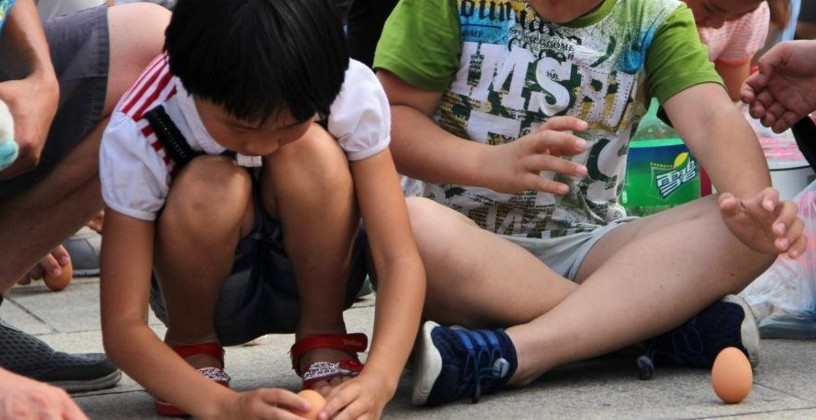
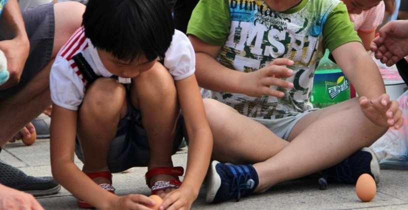

高清大图
 

要闻聚焦
解码习近平的传统文化情结
习近平一直高度重视文物工作，他强调，文物承载灿烂文明，传承历史文化，维系民族精神，是老祖宗留给我们的宝贵遗产，是加强社会主义精神文明建设的深厚滋养。习近平对文物工作的重视是其看重传统文化的一个侧面。
在这些场合，习近平都提到了屈原
习近平曾多次提到屈原，要求学习中国历史，就要继承中华民族的优良传统，从中汲取思想精华，结合新的实践不断发扬光大。还多次引用屈原的名句来阐述思想，寄意深远。新华网《学习进行时》原创品牌栏目“讲习所”为您一一梳理。
端午假期首日铁路发送旅客超千万人次
记者１０日从中国铁路总公司获悉，９日端午假期首日，全国铁路发送旅客１１２７．８万人次，比去年高峰日增加１４７．６万人次，同比增长１５．１％。
端午节：罗马尼亚人兴致勃勃学习包粽子
９日下午，罗马尼亚巴克乌市费迪南德一世中学阶梯教室内欢声笑语，学生和家长们近百人齐聚一堂，学习包粽子、缝香包，感受中国端午节的文化魅力。
宜昌端午文化现象透析：传承中华民族的共同记忆
龙舟飞渡，诗歌行吟，挂艾悬蒲……6月8日，由文化部和湖北省政府主办的2016屈原故里端午文化节开幕。目前在宜昌，像三闾骚坛一样的民间诗社有39家，有诗歌研究和创作学术团体15个，有近2万群众一直坚持着诗歌创作。
最新播报
海内外数百万游客贵州体验别样端午
山东游客刘斌告诉记者：“淋水在这里寓意着风调雨顺、五谷丰登，让体验了不同的民族风情。”全长77.8米，宽2.5米，施秉县号称“世界最长木龙舟”的下水更是引来阵阵惊呼，打破常规的女子选手划龙舟的场景，则形成了一道独特而靓丽的人文风景线。
黄山：端午小长假第二天迎客两万余人
记者10日从黄山风景区管委会获悉，黄山风景区迎来初夏旅游小高峰，截至当日下午4时，共接待游客20404人，景区旅游秩序良好。
端午节当日贵州迎来318W游客
端午节当天，贵州各地推出富有特色的节庆活动，共吸引３１８.６９万人次游客前来，旅游总收入１６.７８亿元，再次刷新小长假同期数据纪录。
端午节来了 重庆一热心居民为武警送粽子共度佳节
武警正在官兵包粽子。早上9时左右，武警重庆总队六支队五中队的战士邓迁从岗哨换下，回到中队营地。“拿两片粽叶，从中间部位折叠成一个漏斗状，左手拿着粽叶，右手添加糯米……”粽叶轻轻一卷，加糯米后捆绑，一个粽子几下就成形了。
端午节的文化内涵
中国社会科学院民族文学研究所助理研究员、中国民俗学会理事宋颖承担的一个研究课题是端午节的变迁和民俗。据宋颖介绍，关于端午节的起源有多种传说，但是在漫长的选择淘汰中，纪念屈原的传说流传最广，最得人心。